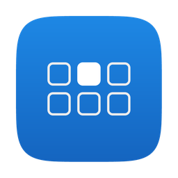

quiet keysQuiet Keys plays a real mechanical switch sound for every key you press, in any app. 22 switch profiles, spatial audio, and nothing leaves your Mac.
One click away
Pick a switch, set the tone, toggle the visualizer. No windows to manage — Quiet Keys hides until you want it.
Why it feels right
Keys on the left half of your keyboard play from the left speaker, keys on the right from the right. Your desk becomes the soundstage.
A floating mini keyboard lights up every key as you press it. Pin it to a corner or let it follow your cursor.
A lock-free audio engine with a 128-frame buffer. The sound lands the instant the key does — around three milliseconds.
Distinct, satisfying clicks for left, right, and middle buttons. Toggle them off any time.
No data collected, no accounts, no network access, no telemetry. Keystrokes are matched to a sound and forgotten. Open source — audit every line.
Gateron inks, Holy Pandas, Box Navies, buckling springs, Topre domes — and a lizard. Adding your own is a drop-in folder.
Type to hear
Pick a switch and type the line below. Sounds pan with key position — use headphones or stereo speakers.
Click the line and start typing. Backspace works.